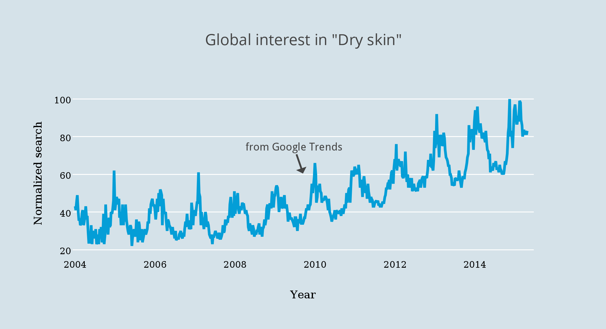
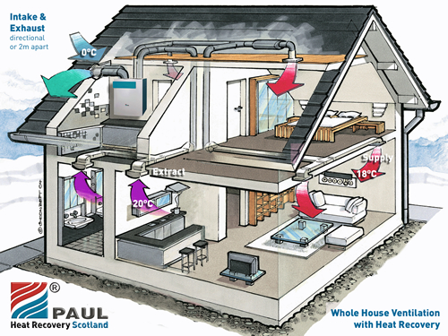
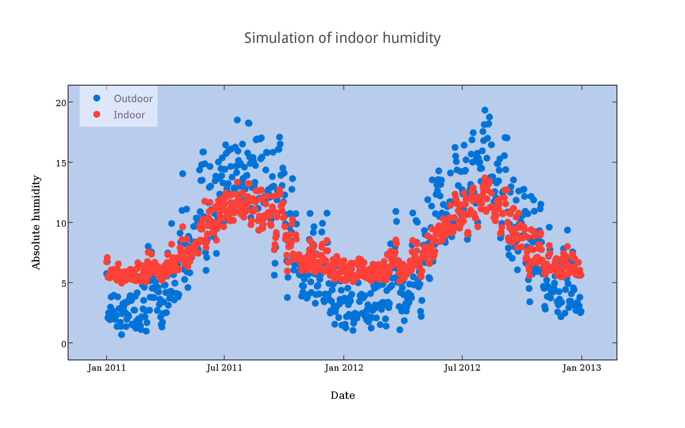
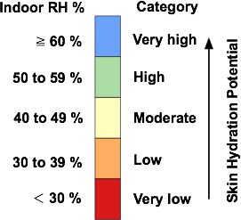
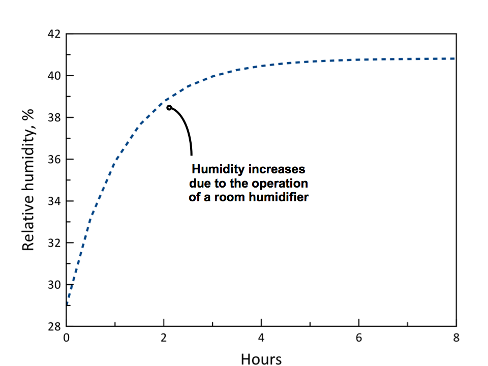

Key information on skin
More skin stuff here
More comments here
Basic Skin Physiology
The outer layer of the skin is called the "stratum corneum" and it serves as the primary barrier between the exterior environment and internal organs.
It ranges in thickness.
TEWL Water releases to air

Dry Skin and Dry Air
The water content or "hydration" of the outer layer of skin is directly linked to the humidity of ambient air.
So as the adjacent graph shows, the hydration of skin decreases as ambient humidity decrease.
Dry skin conditions occur when

Changes in skin with age and season
The biochemistry of skin changes with both age and season!
Similar Internet search patterns are associated with "dry skin" searches in Chinese, Japanese, Spanish, etc.
Search interest generally peaks each winter, and then gradually recedes to a baseline level in summer, which is also trending upward with time.

Global Trends
Global Internet searches for "dry skin" in English have been increasing steadily since 2008.
Similar Internet search patterns are associated with "dry skin" searches in Chinese, Japanese, Spanish, etc.
Search interest generally peaks each winter, and then gradually recedes to a baseline level in summer, which is also trending upward with time.
Exposure to Dry Air Indoors
People spend about 90% of their time indoors and consequently it is the humidity of indoor air that controls the water content of the stratum corneum.
Absolute humidity
seasonal differences

Simulation of Water Vapor Levels Indoors
The outer layer of the skin is called the "stratum corneum"
Similar Internet search patterns are associated with the "dry skin" language equivalent in Chinese, Japanese, Spanish, etc.
Search interest generally peaks each winter, and then gradually recedes to a baseline level, which is also increasing with time.

Basic Techniques for Dry Skin Prevention and Care
- Moniter the hydration potential of indoor air
- Apply skin moisturizers in response to drying stresses
- Humidify bedroom air with water vapor from a room humidifier
Dry skin care must be adaptive because indoor humidity levels are constantly changing in response to meteorological conditions
Skin Hydration Potential of Indoor Air
Drying stresses on the stratum corneum increase as indoor humidity decreases.
The skin hydration potential of indoor air can be divided into five categories linked to relative humidity levels, ranging from very high (humid) to very low (dry).
Indoor relative humidity levels below 40% warrant increased dermal monitoring and care.

Priority #1: Hydration Alerts
Effective personal skin care depends on the timely response to environmental drying stresses on the skin
A once-a-week Email alert from DrySkin.care that is triggered whenever there are low skin hydration potentials in a 7-day forecast for your location will help you to initiate enhanced skin surveillance and treatment.
Sign up for skin hydration alerts for better prevention and care of dry skin! GET
Over-the-Counter (OTC) Skin Moisturizers
The primary method for hydrating skin is the application of moisturizing cremes and lotions.
The two main types of ingredients used for maintaining the barrier function of the stratum corneum are termed occulsives and humectants.
Occulsive compounds form a suface film or layer that inhibits the transport of water from skin to ambient air.
Humectants are hydroscopic or water-loving substances that draw water from deeper in the skin to the stratum corneum.
Many OTC moisturizers use both occulsives and humectants to hydrate skin to healthy levels.
Common Occulsives
- Petrolatum
- Dimethicone
- Lanolin
Common Humectants
- Glycerin
- Urea
- Propylene gylcol
- Hyaluronic acid
Room Humdifiers
A room humidifier operating in your bedroom at night will hydrate your skin while you sleep.
The adjacent plot shows how a room humidifier can increase the hydration potential of indoor air from "very dry" to "moderate".
Room humidifiers should be operated to keep humidity levels between 40 to 50% as higher levels can promote mold formation.
A secondary benefit of the increased humidity provided by a room humidifier is a possible reduction in dry-eye symptoms.
